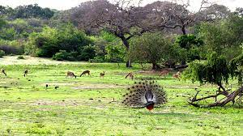
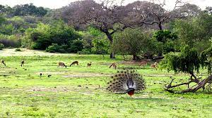

Unveiling the Past: Yala National Park's Rich History
Yala, one of Sri Lanka's oldest national parks, achieved wildlife sanctuary status in 1900 and was formally established as a national park in 1938,
making it one of the first two national parks in the country, alongside Wilpattu. Nestled in the heart of Yala is the ancient Buddhist temple Sithulpawa,
believed to have roots dating back 2,000 years. Renowned for its rich biodiversity, Yala is home to 44 mammal species and 215 bird species, playing a crucial role in
the conservation of Sri Lankan elephants, leopards, and aquatic birds. The park boasts an extraordinary concentration of leopards, making it one of the prime locations
globally for these elusive big cats. Situated in a dry semi-arid region, Yala experiences an average annual rainfall ranging from 500 to 775 millimeters, with temperatures
varying between 26.4°C in January and 30°C in April. Additionally, the park features natural rock pools that provide a perennial water source and is bordered by the sea
to the southeast, showcasing stunning natural beaches and sand dunes. Explore the wonders of Yala, where history, biodiversity, and natural beauty converge in an
unforgettable experience.
- Location: Yala is situated in Sri Lanka's south-east, along the Indian Ocean, covering nearly 130,000 hectares.
- Historical Transformation: Initially used as a hunting ground for the elite during British rule, Yala has undergone a significant transformation into a conservation area, reflecting a shift in attitudes towards wildlife preservation.
- Recommended Visiting Period: The period between February and July is optimal for visitors. Lower water levels during this time encourage animals to emerge into open areas, increasing the likelihood of wildlife sightings.
Peacock
(Pavo cristatus)
The peacock is a beautiful bird with a life span of 10-25 years. It inhabits forests and grasslands,
feeding on insects, plants, and small animals. Known for their vibrant and colorful plumage,
peacocks are a sight to behold in nature.
Saltwater Crocodile
(Crocodylus porosus)
The saltwater crocodile, with a remarkable life span of 70-100 years, thrives in coastal areas and mangrove swamps.
Its diet includes fish, mammals, and birds. As the largest living reptile, saltwater crocodiles are recognized
for their powerful jaws and impressive presence in aquatic environments.
Sri Lankan Sloth Bear
(Melursus ursinus inornatus)
The sloth bear, living 20-25 years, is found in forests and grasslands. Feeding on insects, fruits, and termites,
sloth bears have a distinctive shaggy coat and a white V-shaped mark on their chest. These bears are fascinating
creatures with unique characteristics in the animal kingdom.

 
